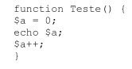
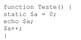
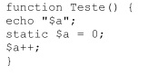

Variaveis
O modificador staticUma variável estática é visível num escopo local, mas ela é inicializada apenas uma vez e seu valor não é perdido quando a execução do script deixa esse escopo. Veja o seguinte exemplo:
O último comando da função é inútil, pois assim que for encerrada a execução da função a variável $a perde seu valor. Já no exemplo seguinte, a cada chamada da função a variável $a terá seu valor impresso e será incrementada:
O modificador static é muito utilizado em funções recursivas, já que o valor de algumas variáveis precisa ser mantido. Ele funciona da seguinte forma: O valor das variáveis declaradas como estáticas é mantido ao terminar a execução da função. Na próxima execução da função, ao encontrar novamente a declaração com static, o valor da variável é recuperado.
Em outras palavras, uma variável declarada como static tem o mesmo “tempo de vida” que uma variável global, porém sua visibilidade é restrita ao escopo local em que foi declarada e só é recuperada após a declaração.
Exemplo:
O exemplo acima não produzirá saída alguma. Na primeira execução da função, a impressão ocorre antes da atribuição de um valor à função e, portanto o conteúdo de $a é nulo (string vazia). Nas execuções seguintes da função Teste() a impressão ocorre antes da recuperação do valor de $a e, portanto nesse momento seu valor ainda é nulo. Para que a função retorne algum valor o modificador static deve ser utilizado.
Variáveis enviadas pelo navegadorPara interagir com a navegação feita pelo usuário, é necessário que o PHP possa enviar e receber informações para o software de navegação. A maneira de enviar informações, como já foi visto anteriormente, geralmente é através de um comando de impressão, como o echo. Para receber informações vindas do navegador através de um link ou um formulário html o PHP utiliza as informações enviadas através da URL. Por exemplo: se seu script php está localizado em “http://localhost/teste.php3” e você o chama com a url “http://localhost/teste.php3?php=teste”, automaticamente o PHP criará uma variável com o nome $php contendo a string “teste”. Note que o conteúdo da variável está no formato urlencode. Os formulários html já enviam informações automaticamente nesse formato, e o PHP decodifica sem necessitar de tratamento pelo programador.
URLencodeO formato urlencode é obtido substituindo os espaços pelo caracter “+” e todos os outros caracteres não alfa-numéricos (com exceção de “_”) pelo caracter “%” seguido do código ASCII em hexadecimal.
Por exemplo: o texto “Testando 1 2 3 !!” em urlencode fica “Testando+1+2+3+%21%21”
O PHP possui duas funções para tratar com texto em urlencode. Seguem suas sintaxes:
string urldecode(string texto);
Essas funções servem respectivamente para codificar ou decodificar um texto passado como argumento. Para entender melhor o que é um argumento e como funciona uma função, leia o tópico “funções”.
Variáveis de ambienteO PHP possui diversas variáveis de ambiente, como a $PHP_SELF, por exemplo, que contém o nome e o path do próprio arquivo. Algumas outras contém informações sobre o navegador do usuário, o servidor http, a versão do PHP e diversas informações. Para ter uma listagem de todas as variáveis e constantes de ambiente e seus respectivos conteúdos, deve-se utilizar a função phpinfo().
Verificando o tipo de uma variável
Por causa da tipagem dinâmica utilizada pelo PHP, nem sempre é possível saber qual o tipo de uma variável em determinado instantes não contar com a ajuda de algumas funções que ajudam a verificar isso. A verificação pode ser feita de duas maneiras:
Função que retorna o tipo da variávelstring gettype(mixed var)
A palavra “mixed” indica que a variável var pode ser de diversos tipos.
A função gettype pode retornar as seguintes strings: “integer”, “double”, “string”, “array”, “object” e “unknown type”.
Funções que testam o tipo da variáveSão as funções is_int, is_integer, is_real, is_long, is_float, is_string, is_array e is_object. Todas têm o mesmo formato, seguindo modelo da assinatura a seguir:
int is_integer(mixed var);
Todas essas funções retornam true se a variável for daquele tipo, e false em caso contrário.
Destruindo uma variávelÉ possível desalocar uma variável se ela não for usada posteriormente através da função unset, que tem a seguinte assinatura:
int unset(mixed var);
A função destrói a variável, ou seja, libera a memória ocupada por ela, fazendo com que ela deixe de existir. Se mais na frente for feita uma chamada á variável, será criada uma nova variável de mesmo nome e de conteúdo vazio, a não ser que a chamada seja pela função isset. Se a operação for bem sucedida, retorna true.
Verificando se uma variável possui um valorExistem dois tipos de teste que podem ser feitos para verificar se uma variável está setada: com a função isset e com a função empty.
A função isset
Possui o seguinte protótipo:
int isset(mixed var);
E retorna true se a variável estiver setada (ainda que com uma string vazia ou o valor zero), e false em caso contrário.
A função emptyPossui a seguinte assinatura:
int empty(mixed var);E retorna true se a variável não contiver um valor (não estiver setada) ou possuir valor 0 (zero) ou uma string vazia. Caso contrário, retorna false. Arrays Multidimensionais
Arrays multidimensionais são arrays simples com um dos (ou todos) seus elementos sendo outro array e assim consecutivamente.
Exemplo:$Campeao[5] = 123456789 ;
$Tricampeao[“casa”] = $Campeao;
$Tricampeao[“predio”] = 19191919;
$Brasil[1] = $Tricampeao;
$Brasil[2] = “Bicampeao”;
$Brasil[“copa”] = $Tricampeao;
$Brasil[4] = “Tetracampeao”;
$Brasil[“mundo”] = “Pentacampeao”;
echo $Campeao[5]; // resultará 123456789 Array simples
echo $Brasil[1][“casa”][5] ; // resultará 19191919 Array tridimensional
echo $Tricampeao[“casa”][5]; // resultará 123456789 Array bidimensional
echo $Brasil[“copa”][“predio”]; // resultará 19191919 Array bidimensional